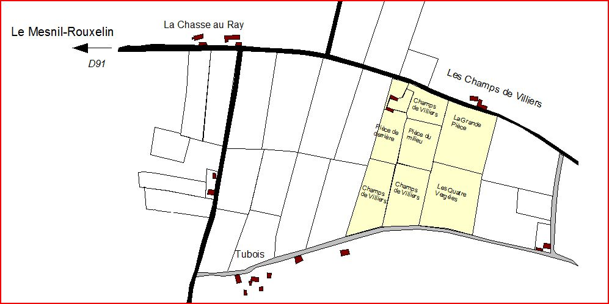
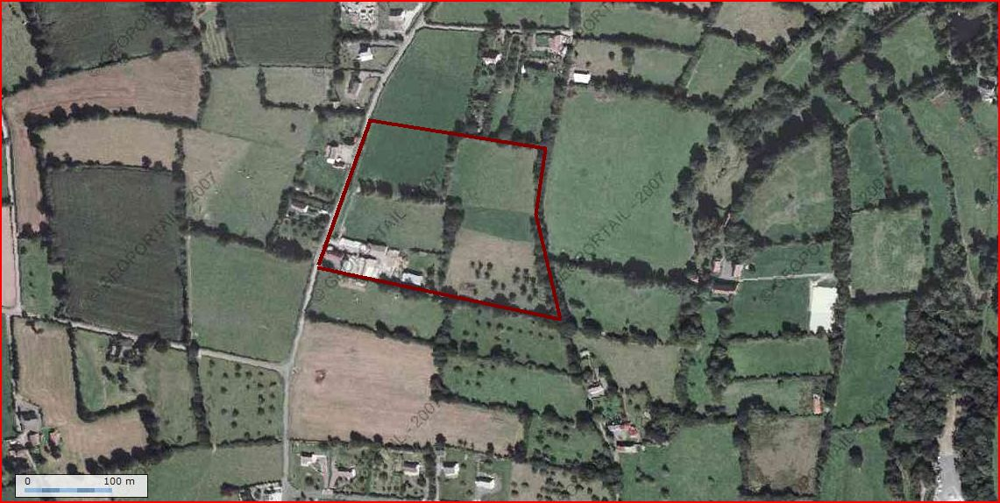

Les Champs de Villiers, biens Rouxelin
- BA.1 Affiche pour Vente des biens de Jean François Rouxelin, les Champs de Villiers, 20-01-1872
- BA.2 Plan des Champs de Villiers, sans date
- BA.3 Adjudication des biens Rouxelin à Alexandre Bréhin, 20-01-1872
- BA.4 Vente des Champs de Villiers (succession de Jean François Rouxelin) à Alexandre Bréhin, 26-03-1872
- BA.5 Vente des Champs de Villiers par Louis Rouxelin à Alexandre Bréhin, 1873
- BA.6 Radiation au profit de Michel Busquet contre Louis Rouxelin, 23-04-1873
- BA.7 Autorisation de contruire un mur donnée à Bréhin, 21-07-1872
Alexandre Bréhin, entrepreneur, de Saint-Lô, achète les Champs de Villiers en janvier 1872 pour 14150 F à Louis Rouxelin, du Dézert, héritier de son frère Jean François Rouxelin,
décédé le 04-04-1871 à Villiers. Ce dernier
possédait les Champs de Villiers depuis plus de 30 ans, et
l'origine n'est pas plus précisée. D'après la
matrice cadastrale de 1843 conservée à la mairie de
Villiers, la propriétaire de ces terres est à cette
époque la veuve de Thomas Rouxelin, qu'on peut supposer être les parents de Louis et Jean François.
En plus des terres autour de la ferme de Tonton Jean, il y a "les
Pendants", la carrière située près de chez Morel.
La ferme est ainsi décrite :"un corps de bâtiments
à usage de cuisine, salles, chambre et grenier dessus, un autre
corps de bâtiments à usage d'étables et cellier,
une charreterie, un puits dans la cour".
En juillet 1872, le maire de Villiers autorise Alexandre Bréhin
à construire un mur sur le chemin vicinal de Saint-Lô
à Moon, en face de sa cour. On peut supposer que c'est toujours
le même mur qui ferme la cour chez Tonton Jean.
Les pièces citées sont :
- le Champ de Villiers (n°641 B, 28 ares 13 centiares)
- la Pièce de Derrière (n°642 B, 33 ares 94 centiares)
- la Pièce du Milieu (n°643 B, 43 ares 68 centiares)
- le Champ de Villiers (n°644 B, 57 ares 60 centiares)
- le Champ de Villiers (n°645 B, 55 ares 20 centiares)
- la Grande Pièce (n°647 B, 85 ares 78 centiares)
- les Quatre Vergées (n°646 B, 80 ares)
- les Pendants (n°649 C, 34 ares 42 centiares)


dernière modification : 20 avril 2008